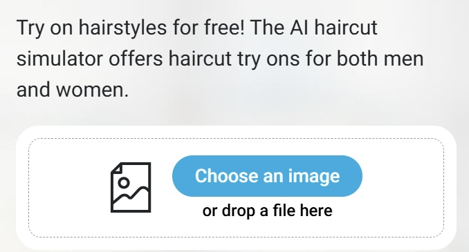
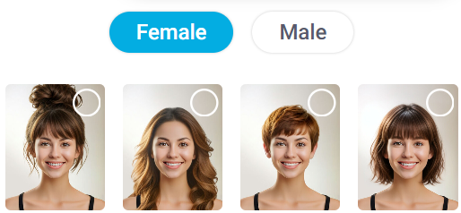
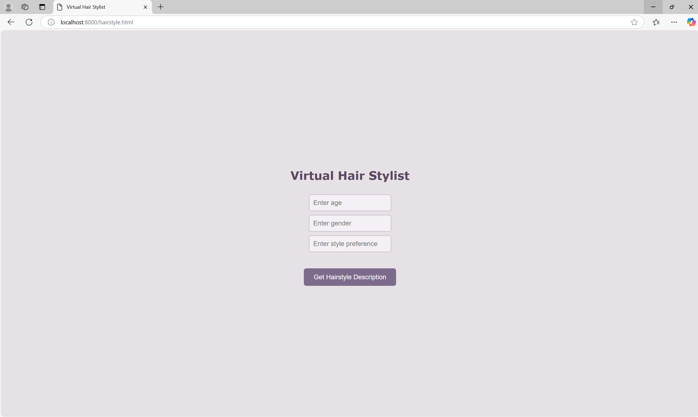
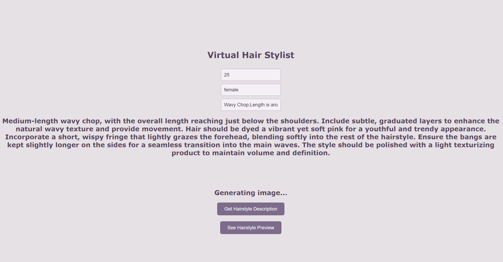
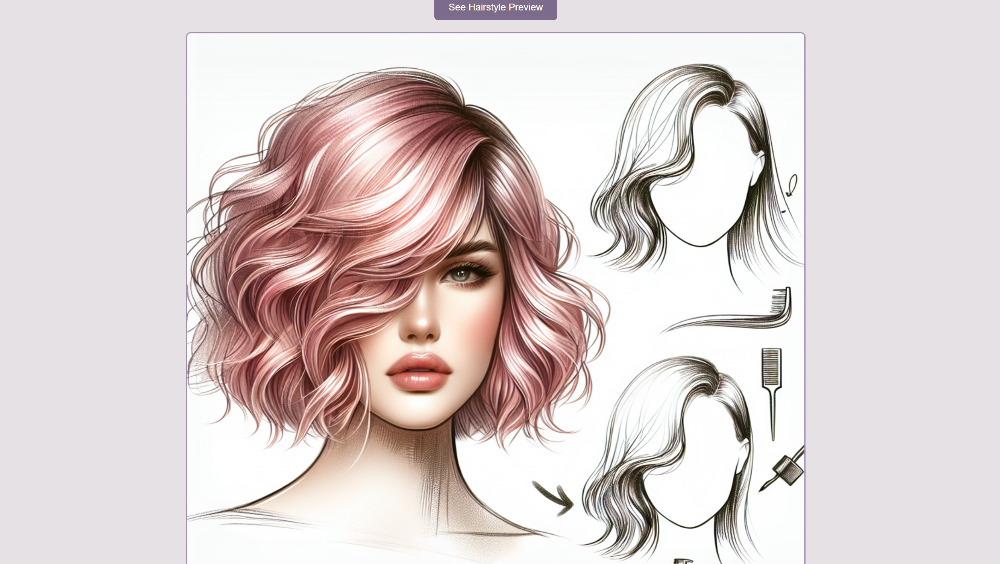
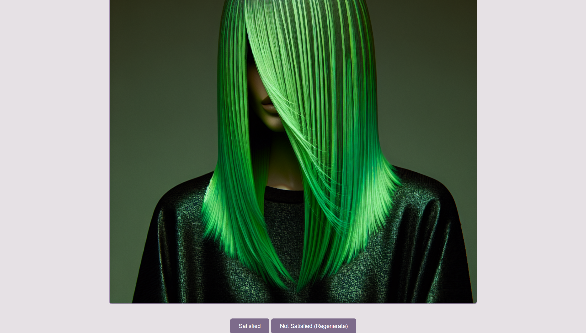

Virtual Stylist
Virtual-Stylist is an AI-powered web application that redefines how users discover and communicate their ideal hairstyles. Unlike existing platforms requiring photo uploads, our solution prioritizes privacy, ensuring users can explore styles worry-free.
Problem & Research Insights
Challenges
- Many users struggle to describe their ideal hairstyle in words.
- Photo-based AI styling apps raise privacy & security concerns.
- Existing solutions (e.g., YouCam) lack inclusivity for non-binary users.


Solution & Design Process
Approach
I designed a photo-free AI system where users input key attributes (age, inclusive gender, style preferences) to receive:
- Detailed, professional hairstyle descriptions
- AI-generated image previews for better visualization
UX Design Process
- Wireframe & IA: Defined user flow & streamlined interactions.
- Lo-fi Prototype & Testing: Developed a basic functional web prototype using VS Code.
- UI & Interaction Design: Iterated based on feedback to improve interaction (like modify input, regenerate), and accuracy.




Tech Stack & Tools
- OpenAI API for text (ChatGPT) and image generation (DALLE).
- Oak framework for the Deno backend.
- Google Fonts (Scope One) for typography.